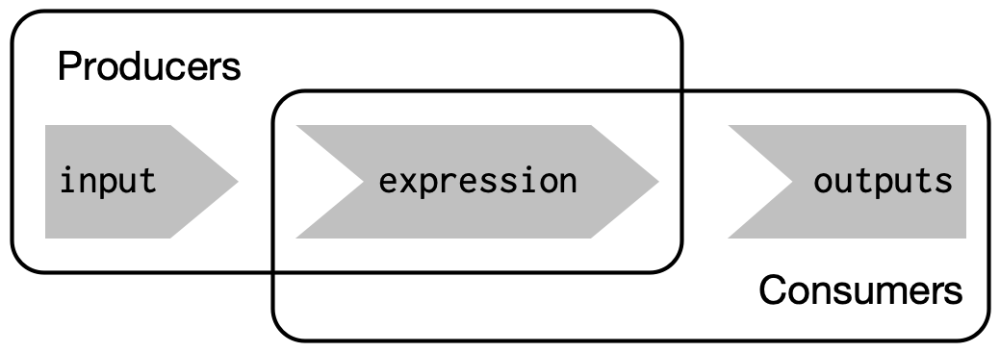

library(shiny)
# front end interface (Html)
ui <- fluidPage()
# back end logic
server <- function(input, output, session) {}
shinyApp(ui, server)- 1
- User interface
- 2
- Server
Sources: Wickham (2021, Ch. 3)
library(shiny)
# front end interface (Html)
ui <- fluidPage()
# back end logic
server <- function(input, output, session) {}
shinyApp(ui, server)ui simple because every user gets same htmlserver more complicated because every user needs independent version of the app
server() is invoked each time new session starts
input, output, session) that are created by Shiny (not by us!) when session starts connecting to specific sessioninput: a list-like object that contains all the input data sent from the browser, named according to the input ID
numericInput("count", label = "Number of values", value = 100) generates input$countinput can only be read from within reactive contexts created by a reactive functions like renderText() or reactive()
output: a list-like object containing outputs named according to output ID
output used for sending output instead of receiving input (always in concert with render function as below)renderText() set up special reactive context that automatically tracks what inputs the output uses AND converts output of R code into HTML suitable for display on a web page
server, wrap generated outputs and correspond to the type or reactive output
output$... listrenderImage({...})renderPlot({...})renderPlotly({...}) (!)renderPrint({...})renderTable({...})renderDataTable({...}) (!)renderText({...})renderUI({...}) (!)renderLeaflet({...}) (!)renderImage({...}) creates images (saved as a link to a source file)renderPlot({...}) creates plotsrenderPlotly({...}) creates interactive plotly graphrenderPrint({...}) creates any printed outputrenderTable({...}) creates data frame, matrix, other table like structures
renderDataTable({...}) creates interactive datatablerenderText({...}) creates character stringsrenderUI({...}) creates a Shiny tag object or HTMLrenderLeaflet({...}) create a leaflet maprenderText() action every time we update input$name (automatically!)output$greeting will need to be recomputed whenever input$name is changedgreeting has a reactive dependency on namestring (inspect shape!) with code shown below
string is created with reactive() function to app in Section 5.1.ui <- fluidPage(
textInput("name", "What's your name?"),
textOutput("greeting"),
textOutput("greeting2")
)
server <- function(input, output, session) {
string <- reactive(paste0("Hello ", input$name, "!"))
output$greeting <- renderText(string())
output$greeting2 <- renderText(string())
}
shinyApp(ui, server)server1, server2 and server3 below?# UI
ui <- fluidPage(
textInput("name", "What's your name?"),
textOutput("greeting")
)
# SERVERS
server1 <- function(input, output, server) {
input$greeting <- renderText(paste0("Hello ", name))
}
# HOMEWORK!
server2 <- function(input, output, server) {
greeting <- paste0("Hello ", input$name)
output$greeting <- renderText(greeting)
}
server3 <- function(input, output, server) {
output$greting <- paste0("Hello", input$name)
}server2 and server3!)Start by deciding how many and which inputs (1), reactives (2) and ouputs (3) there are. Then start drawing with inputs represented in the first column on the left. You could use, e.g., name> for inputs, >name> for reactives and >name for outputs and arrows to connect them.
server1 <- function(input, output, session) {
c <- reactive(input$a + input$b)
e <- reactive(c() + input$d)
output$f <- renderText(e())
}
server2 <- function(input, output, session) {
x <- reactive(input$x1 + input$x2 + input$x3)
y <- reactive(input$y1 + input$y2)
output$z <- renderText(x() / y())
}
server3 <- function(input, output, session) {
d <- reactive(c() ^ input$d)
a <- reactive(input$a * 10)
c <- reactive(b() / input$c)
b <- reactive(a() + input$b)
}server1, server2 and server3 below?server1: Forgot input$server2: input$name outside of renderText() functionserver3: Typo in output$gretingTo create the reactive graph we need to consider the inputs, reactive expressions, and outputs of the app.
For server1 we have the following objects:
input$a, input$b, and input$dc() and e()output$fInputs input$a and input$b are used to create c(), which is combined with input$d to create e(). The output depends only on e().

For server2 we have the following objects:
input$y1, input$y2, input$x1, input$x2, input$x3y() and x()output$zInputs input$y1 and input$y2 are needed to create the reactive y(). In addition, inputs input$x1, input$x2, and input$x3 are required to create the reactive x(). The output depends on both x() and y().

For server3 we have the following objects:
input$a, input$b, input$c, input$da(), b(), c(), d()As we can see below, a() relies on input$a, b() relies on both a() and input$b, and c() relies on both b() and input$c. The final output depends on both c() and input$d.

reactive()) are important because…

reactive(), observe(), bindevent() and others.`reactive(): wraps a normal expression to create a reactive expression
string changes whenever dependency input$name changes.reactive(): creates a reactive expression that can be changed over time by user inputsobserve(): creates an observer that runs whenever any of its reactive dependencies change
observe() will be re-evaluated whenever any reactive inputs or reactive expressions that it references get updatedobserve() to a variable, so we can’t refer to it from other reactive consumersBelow we use a reactive expression using reactive() to create squared. This is then reused in the observe() function that wraps a render function renderText() that creates and the output element output$text.
library(shiny)
ui <- fluidPage(
numericInput("num", "Enter a number", value = 1),
textOutput("text")
)
server <- function(input, output, session) {
# reactive expression
squared <- reactive({
input$num^2
})
# observer
observe({
output$text <- renderText({
paste0("The square of ", input$num, " is ", squared())
})
})
}
shinyApp(ui = ui, server = server)bindEvent(): provides a straightforward API for event handlingobserveEvent() (observers): used when you want to perform an action in response to an event (see input$button below), but you don’t need the result of the action to be used in the UIIn this example, when the “Generate Random Number” button is clicked, a random number is generated, but it doesn’t get displayed immediately. Instead, the output$randomNumber expression is bound to input$dispButton event with bindEvent(), and the result is displayed only when the “Display Random Number” button is clicked. This allows you to have more control over when the UI updates in response to changes in server-side reactive values.
library(shiny)
# Define UI
ui <- fluidPage(
actionButton("genButton", "Generate Random Number"),
actionButton("dispButton", "Display Random Number"),
textOutput("randomNumber")
)
# Define server logic
server <- function(input, output, session) {
randNum <- reactiveValues(num = NULL)
observeEvent(input$genButton, {
randNum$num <- runif(1) # Generate a random number when genButton is clicked
})
output$randomNumber <- renderText({
randNum$num # Generate the reactive expression
}) %>%
bindEvent(input$dispButton) # Binding the output$randomNumber reactive expression to dispButton
}
# Run the application
shinyApp(ui = ui, server = server, options = list(display.mode='showcase'))bind_event()eventReactive(): Similar to reactive(), but only re-evaluates when a certain event is triggered. Can be used in combination with observeEvent().In this app, when you click the “Generate Random Number” button, a random number is generated, but it’s not displayed yet. When you click the “Display Random Number” button, the generated number is then displayed. The eventReactive() function is used to create a reactive value (the random number) that is updated only when a specific event (clicking the “Generate Random Number” button) occurs.
library(shiny)
# Define UI
ui <- fluidPage(
actionButton("genButton", "Generate Random Number"),
actionButton("dispButton", "Display Random Number"),
textOutput("randomNumber")
)
# Define server logic
server <- function(input, output, session) {
randNum <- eventReactive(input$genButton, {
runif(1) # Generate a random number when genButton is clicked
})
observeEvent(input$dispButton, {
output$randomNumber <- renderText({ randNum() }) # Display the random number when dispButton is clicked
})
}
# Run the application
shinyApp(ui = ui, server = server, options = list(display.mode='showcase'))isolate(): used to access the value of a reactive expression or input without setting up a dependency
In this app, when you click the “Generate Random Number” button, a random number is generated. This number does not immediately cause a reactive event because it’s isolated within the isolate() function. It only gets displayed when you click the “Display Random Number” button. Changes to randNum$num after “Display Random Number” button is clicked won’t affect the displayed value until the button is clicked again. Thus, the isolate() function enables the use of reactive values without triggering reactivity.
library(shiny)
# Define UI
ui <- fluidPage(
actionButton("genButton", "Generate Random Number"),
actionButton("dispButton", "Display Random Number"),
textOutput("randomNumber")
)
# Define server logic
server <- function(input, output, session) {
randNum <- reactiveValues(num = NULL) # Create object to store reactiv values
observeEvent(input$genButton, {
randNum$num <- runif(1) # Generate a random number when genButton is clicked
})
observeEvent(input$dispButton, {
output$randomNumber <- renderText({
isolate(randNum$num) # Display the random number when dispButton is clicked, but do not reactivity link it
})
})
}
# Run the application
shinyApp(ui = ui, server = server, options = list(display.mode='showcase'))reactiveTimer(): used to create a reactive expression that invalidates itself after a given number of milliseconds. This can be useful for causing certain parts of your Shiny app to update on a regular interval.In this example, autoInvalidate() is a reactive expression that becomes invalidated (i.e., signals that it needs to be re-evaluated) every 1000 milliseconds. By referencing autoInvalidate() inside the renderText() function, we’re creating a dependency — so, every time autoInvalidate() is invalidated, the current time is re-evaluated and the UI is updated with the new time.
library(shiny)
# Define UI
ui <- fluidPage(
textOutput("currentTime")
)
# Define server logic
server <- function(input, output, session) {
# Define a reactive timer with a 1000ms (1s) interval
autoInvalidate <- reactiveTimer(1000)
output$currentTime <- renderText({
autoInvalidate() # This line causes the reactive expression to be invalidated (and thus re-evaluated) every second
as.character(Sys.time()) # Display the current time
})
}
# Run the application
shinyApp(ui = ui, server = server)reactive(), observe(), isolate(), bindEvent().When is code in a shiny app run? (Source)
Code outside of ui and server is run once, when the app is launched.


input$...) that ouput$... depends on
server <- function(input, output, session) {} is run once, when you launch your appserver <- function(input, output, session) {} is run once each time a user visits your apprender* functions is rerun constantly (not only when user changes widget value ( see reactivity)server function (at the beginning)
www/ folder in your app directoryread.table("www/swiss.csv", sep=",")read* function (e.g. read.table())render* function
render* chunk each time a user changes a widget mentioned in the chunkTo build reactive shiny apps…
*Output functions to place reactive objects in the UI (webpage)render* functions to let R build output objects (on the server)
server <- function(input, output, session) {...}){} in render* functionsrender* are saved in the output list, with one entry for each reactive object in your appinput values in a render* expressionreactlog can be used to visualize and explore the reactivity of a Shiny app# Restart R to delete log
.rs.restartR()
library(shiny)
library(reactlog)
# tell shiny to log all reactivity
reactlog_enable()
# reactlog_disable()
# run a shiny app
runApp("C:/Users/Paul/Google Drive/13_SHINY_Workshop/shinyapps/guerry/states_paul/app_tab_tabulate.R")
# once app has closed, display reactlog from shiny
shiny::reactlogShow()